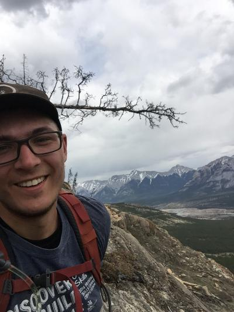

|  | Marko Szmihelsky, MSc, GITData Scientist and Consultant I am a data scientist with a background in geology, mineral exploration, and geochemistry. My interests lie in using various data science techniques to analyze datasets. This includes different forms of spatial analysis using GIS, as well as purpose-built machine learning to find signals in large datasets. |
| 2022 | Master of Science |
| Memorial University of Newfoundland Thesis: Alteration and genesis of the Goldboro Meguma-hosted orogenic gold deposit, Goldboro, Nova Scotia, Canada. Supervisor: Dr. Stephen Piercey |
|
| 2019 | Bachelor of Science with Honours in Geology |
| University of Alberta |
| Programming Languages | |
|---|---|
| Python | ⭐⭐⭐⭐⭐ |
| PostgreSQL | ⭐⭐⭐⭐⭐ |
| HTML | ⭐ |
| CSS | 🚫*in progress* |
| Miscellaneous | |
| Photography | ⭐⭐⭐ |
| Tying Shoes | ⭐⭐⭐⭐⭐ |
| Languages | |
| English | ⭐⭐⭐⭐⭐ |
| French | ⭐⭐⭐⭐ |
| Ukrainian | ⭐⭐⭐⭐⭐ |